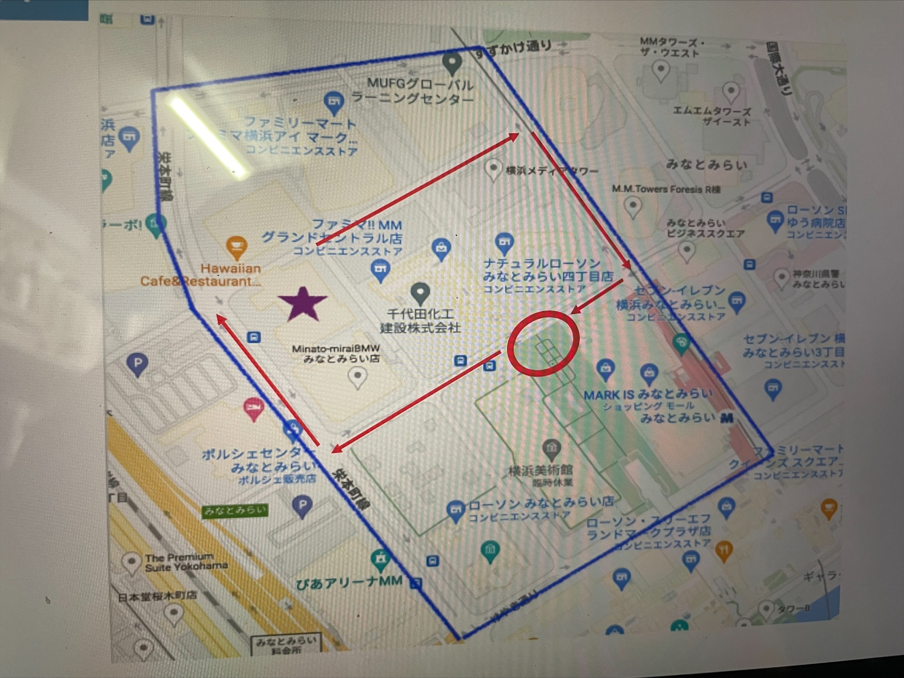
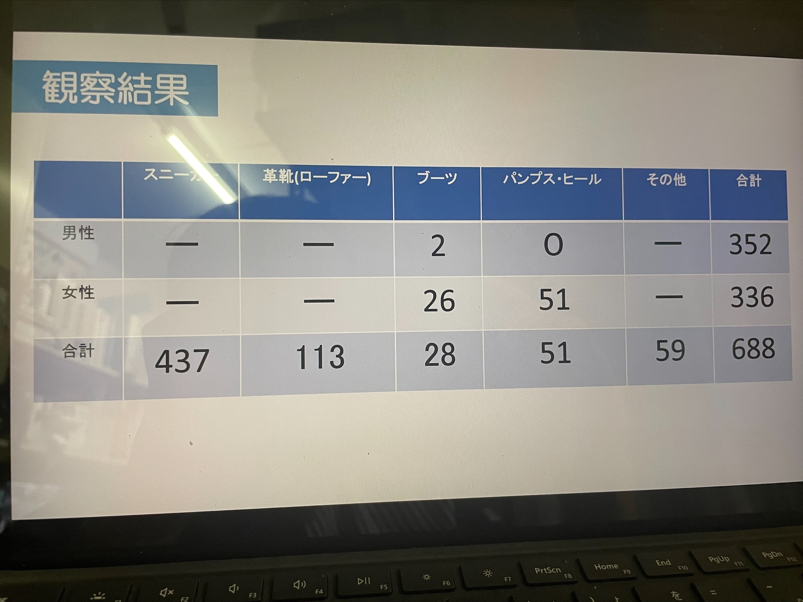

移動観測の考察
移動観測のルートは次の通りだ。

私たちのグループは通行人の靴に着目した。

この表は定点観測と移動観測の合計である。動画を見ても、表を見てもやはりスニーカーは履いている人の数が圧倒的に多い。
老若男女問わず履いている人が多かった。天気予報で雨が降ると予想されていたので、ブーツが多くなると考えていたが、想像以上に履いている人が少なかった。
サラリーマンやOLが多かったため、革靴や、パンプスを履いている人も多かった。
まとめ
気温や気候によって、履くものが大きく変わるのだと感じた。スニーカーを履いている人が多かったが、NIKEのスニーカーがダントツで多かった。
反省点としては、靴の種類ばかりをカウントしてしまい、男女の差をカウントすることができなかったことだ。もっと効率の良い役割分担ができたのではないか。
次回観測の機会があればそのようなところを改善したい。